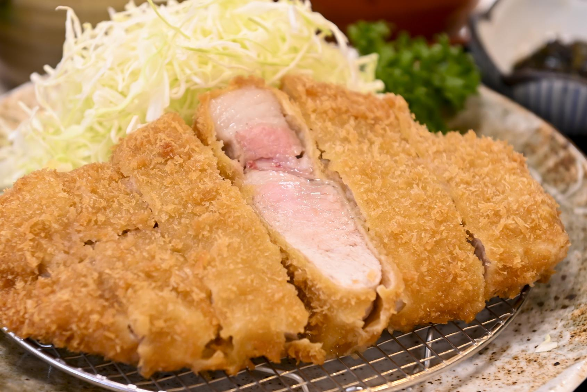
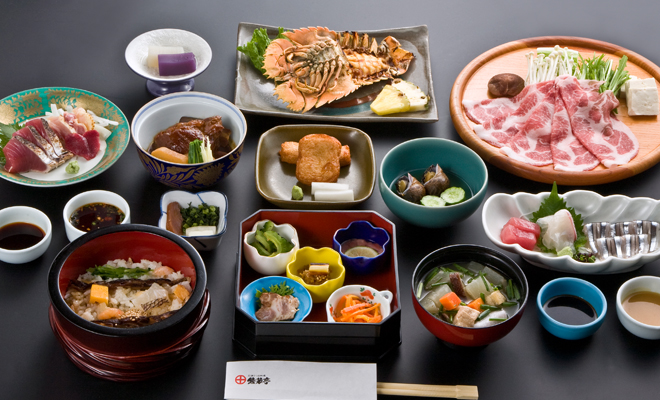
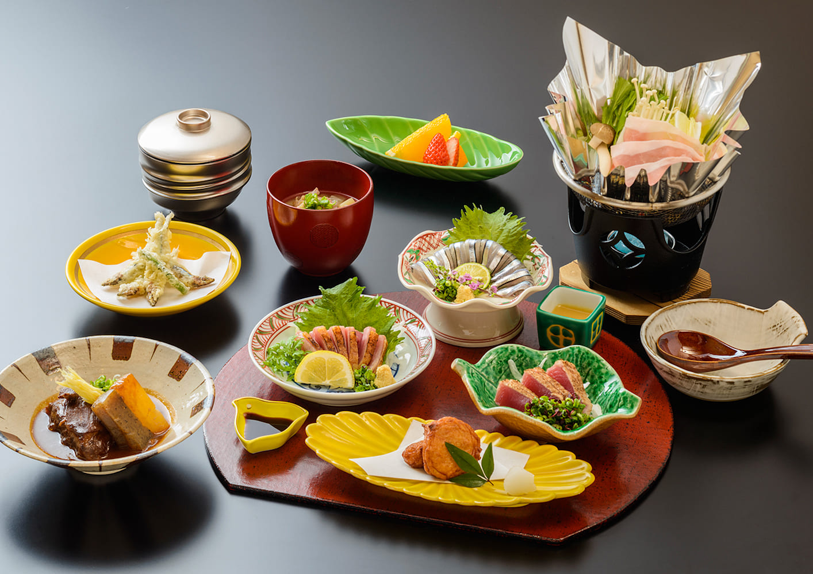
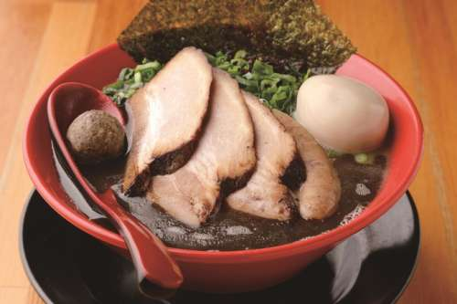
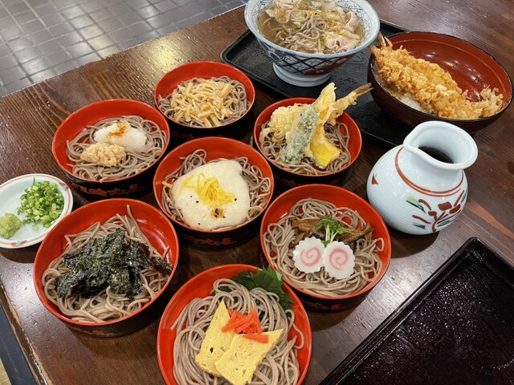

鹿児島には、地元の食材を活かした美味しい料理を提供する飲食店がたくさんあります。特におすすめの5店舗をご紹介します。
1. 豚カツ 川久 (とんかつ かわきゅう)
鹿児島黒豚を使った絶品の豚カツが味わえる老舗。ジューシーで旨味たっぷりの黒豚のロースやヒレを、サクサクの衣で揚げています。ランチタイムは特に賑わいます。
ジャンル: 豚カツ、和食
2. 熊襲亭 (くまそてい)
鹿児島の郷土料理を一堂に楽しめるお店。きびなごの刺身、さつま揚げ、とんこつ（豚の角煮）など、地元の味を存分に堪能できます。観光客にも人気です。
ジャンル: 郷土料理、和食
3. 吾愛人 本店 (わかな ほんてん)
鹿児島市内にある人気の居酒屋。新鮮な魚介類や地鶏、黒豚など、鹿児島の旬の食材を使った創作料理が楽しめます。焼酎の種類も豊富です。
ジャンル: 居酒屋、和食
4. 麺屋 剛 (めんや ごう)
鹿児島ラーメンの代表格の一つ。濃厚な豚骨スープと中太麺が特徴で、地元の人々にも愛されています。チャーシューも絶品です。
ジャンル: ラーメン
5. 吹上庵 (ふきあげあん)
手打ち蕎麦が自慢のお店で、定食メニューも充実しています。特に「黒豚しゃぶそば」は、鹿児島の黒豚と蕎麦を一緒に楽しめる人気のメニューです。落ち着いた雰囲気で食事を楽しめます。
ジャンル: そば、和食